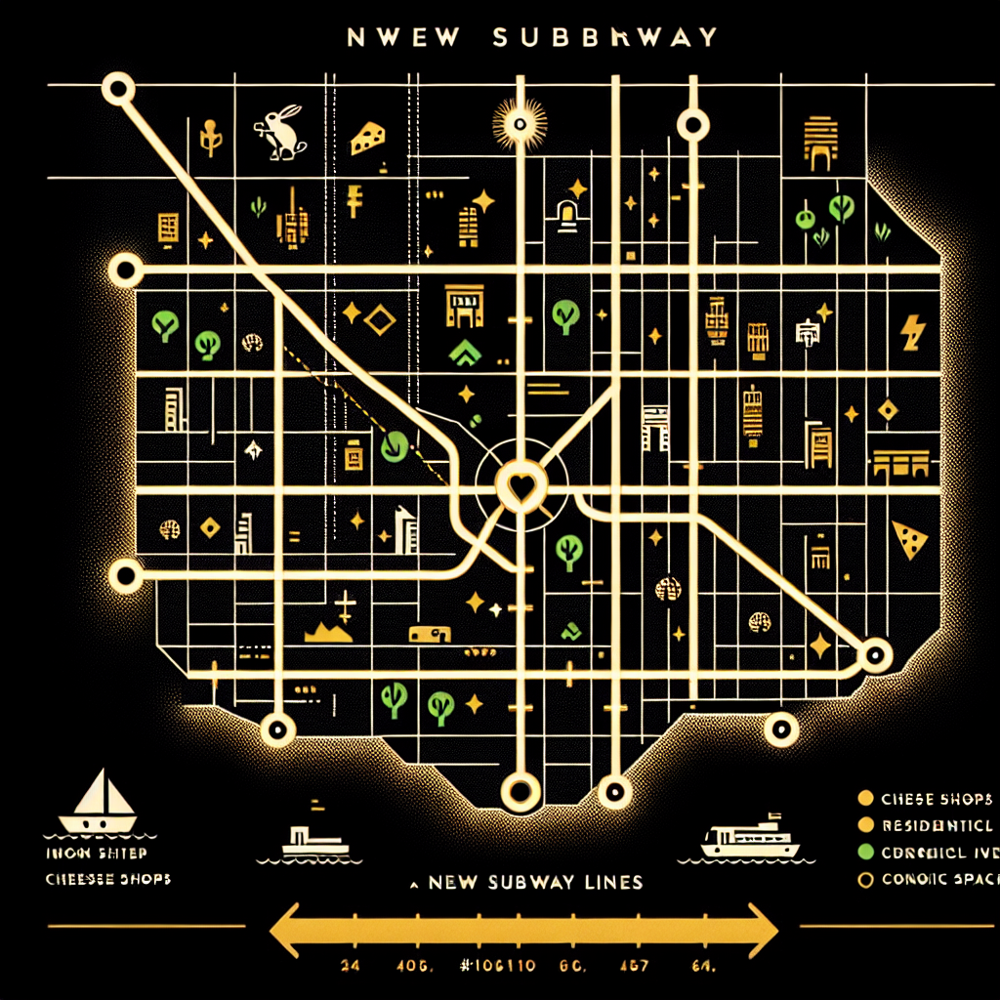

Subway Expansion Set to Transform Lower Ratopolis
Major project aims to rejuvenate local businesses and improve commuter experience, but raises environmental concerns.

The Ratopolis Urban Development Council has announced today the approval of a grand-scale expansion of the city's subway system, aiming to better connect the Lower Ratopolis neighborhoods with the bustling city center. This extensive project, set to commence next month, promises to rejuvenate local businesses and elevate the commuter experience, although it has sparked considerable controversy over its potential environmental impact.
The subway expansion plan will modernize and extend several key lines, primarily focusing on Lower Ratopolis. The project, expected to last three years, will unfold in multiple phases, significantly transforming areas like Cheese Plaza and the Nutty Borough.
“Improved connectivity and reduced travel time for commuters are our top priorities,” stated Urban Development Councilor Whisker McCheese. “This project will also bring an economic boost for local businesses by increasing foot traffic and modernizing our infrastructure.”
Local business owners are particularly enthusiastic about the economic benefits. Cheddar Jack, owner of Cheddar’s Fine Foods, believes the expansion is a “golden opportunity.” He said, “More foot traffic means more cheese sales! This could be the revival Lower Ratopolis needs.”
Commuters share similar excitement. “I can’t wait for the new subway lines,” exclaimed Niblet Squeaky, a daily commuter. “My ride to work will be so much smoother, and I’ll have extra time to spend with my family.”
However, not all Rats in Ratopolis are entirely on board with the expansion. Environmental activists have raised alarms about the project’s ecological footprints. “While we understand the need for development, we must tread carefully,” warned Greenie Tails, a prominent environmental activist. “We don’t want to gnaw away at our green spaces.”
To address such concerns, the council has promised thorough environmental assessments and mitigating measures. Rita Rivers, an environmental scientist, added, “Our plan includes various strategies to minimize the ecological impact, such as green construction methods and compensatory green spaces.”
Historical context reveals mixed outcomes from past infrastructure projects in Ratopolis. The Cheese Wheel Express project, for instance, successfully boosted local economy but faced criticism for its handling of environmental resources. Learning from these precedents, Mayor Furball intends to proceed cautiously.
Urban planner Whiskers McPlanny shared his outlook on the project’s long-term benefits. "By improving our infrastructure, we pave the way for a more connected and thriving Ratopolis. If this project succeeds, it could be a stepping stone for further expansions and urban development.”
Encouraging public involvement, the Urban Development Council has scheduled several forums for feedback and discussions. “We want to ensure this project benefits all of Ratopolis, from the smallest mouse to the biggest rat,” urged Hazel High Climber, a local community leader. “Your voices matter.”
As the commencement date approaches, it is crucial for the residents of Lower Ratopolis and beyond to weigh in on this monumental project’s future. Join the conversation and shape the future of your city. Attend the public forums, voice your opinions, and help us build a better, connected Ratopolis.
Thus, while the subway expansion holds bright prospects for our beloved Ratopolis, balancing development with ecological care will be the true challenge. Only by working together can we hope to achieve the dream of a bustling, yet sustainable, urban haven.
The subway expansion plan will modernize and extend several key lines, primarily focusing on Lower Ratopolis. The project, expected to last three years, will unfold in multiple phases, significantly transforming areas like Cheese Plaza and the Nutty Borough.
“Improved connectivity and reduced travel time for commuters are our top priorities,” stated Urban Development Councilor Whisker McCheese. “This project will also bring an economic boost for local businesses by increasing foot traffic and modernizing our infrastructure.”
Local business owners are particularly enthusiastic about the economic benefits. Cheddar Jack, owner of Cheddar’s Fine Foods, believes the expansion is a “golden opportunity.” He said, “More foot traffic means more cheese sales! This could be the revival Lower Ratopolis needs.”
Commuters share similar excitement. “I can’t wait for the new subway lines,” exclaimed Niblet Squeaky, a daily commuter. “My ride to work will be so much smoother, and I’ll have extra time to spend with my family.”
However, not all Rats in Ratopolis are entirely on board with the expansion. Environmental activists have raised alarms about the project’s ecological footprints. “While we understand the need for development, we must tread carefully,” warned Greenie Tails, a prominent environmental activist. “We don’t want to gnaw away at our green spaces.”
To address such concerns, the council has promised thorough environmental assessments and mitigating measures. Rita Rivers, an environmental scientist, added, “Our plan includes various strategies to minimize the ecological impact, such as green construction methods and compensatory green spaces.”
Historical context reveals mixed outcomes from past infrastructure projects in Ratopolis. The Cheese Wheel Express project, for instance, successfully boosted local economy but faced criticism for its handling of environmental resources. Learning from these precedents, Mayor Furball intends to proceed cautiously.
Urban planner Whiskers McPlanny shared his outlook on the project’s long-term benefits. "By improving our infrastructure, we pave the way for a more connected and thriving Ratopolis. If this project succeeds, it could be a stepping stone for further expansions and urban development.”
Encouraging public involvement, the Urban Development Council has scheduled several forums for feedback and discussions. “We want to ensure this project benefits all of Ratopolis, from the smallest mouse to the biggest rat,” urged Hazel High Climber, a local community leader. “Your voices matter.”
As the commencement date approaches, it is crucial for the residents of Lower Ratopolis and beyond to weigh in on this monumental project’s future. Join the conversation and shape the future of your city. Attend the public forums, voice your opinions, and help us build a better, connected Ratopolis.
Thus, while the subway expansion holds bright prospects for our beloved Ratopolis, balancing development with ecological care will be the true challenge. Only by working together can we hope to achieve the dream of a bustling, yet sustainable, urban haven.